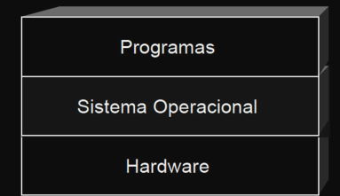
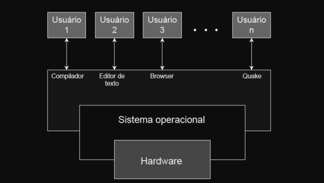
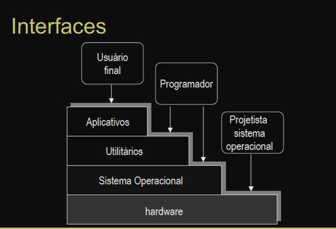

Sistema operacional é um programa entre o hardware e os programas dos usuários de forma a atingir esses dois objetivos.

Componentes Genéricos
- Hardware: recurso físico base.
- Sistema operacional: controla e coordena o uso de hardware entre vários aplicativos e usuários.
- Programas aplicativos e de sistema: define como o uso do hardware trabalha na resolução de problemas.
- Usuários: pessoas, máquinas.

Interface entre aplicativos e o hardware. Há duas formas de ver um sistema operacional:
- Alocador de recursos
- Programa de controle
Tornar mais conveniente e eficiente a utilização de um computador, facilitar a evolução do sistema.

Serviços oferecidos pelo Sistema Operacional
-
Criação de programas
- Editores, depuradores, compiladores, etc.
-
Execução dos programas
- Carga de programas em memórias
- Acesso a dispositivos de E/S
- Controle de acesso a arquivos
-
Acesso a recursos de sistema
-
Contabilidade
- Estatísticas
- Monitoração de desempenho
- Sinalizar upgrades necessários de hardware (memória, disco, etc.)
- Tarifação de usuários
-
Detecção de erros
-
Erros de hardware
- e.g., erros de memória, falha em dispositivos de E/S, etc.
-
Erros de programação
- e.g., overflow, acesso não autorizado a posições de memória, etc.
- Aplicação solicita recursos que o sistema operacional não pode alocar (segurança, falta do recurso, etc.)
-
Sistema operacional na visão do usuário
- Imagem que um usuário tem do sistema
-
Interface oferecida ao usuário para ter acesso a recursos do sistema
- Chamadas de sistema
- Programas de sistema
-
Sistema operacional na visão de projeto
- Organização interna do sistema operacional
- Mecanismos empregados para gerenciar recursos do sistema
Chamadas de Sistema
Forma que programas solicitam serviços ao sistema operacional.
-
Análogo a sub-rotinas
- Transferem controle para o sistema operacional ao invés de transferir para outro ponto do programa
-
É o núcleo (kernel) do sistema operacional que implementa as chamadas de sistema
- Existem chamadas de sistema associadas a gerência do processador, de memória, arquivos e de E/S
-
Variação: micro-kernel
- Serviços básicos são implementados pelo micro-kernel
- Kernel implementa demais serviços empregando esses serviços básicos
Programas de Sistema
Programas executados fora do Kernel (utilitários) e implementam tarefas básicas
-
Muitas vezes confundidos com o próprio sistema operacional
- e.g., compiladores, assemblers, ligadores, etc.
-
Interpretador de comandos
-
Ativado sempre que o sistema operacional inicia uma sessão de trabalho
- e.g., bash, tsch, sh, etc.
-
Interface gráfica de usuário (GUI)
- e.g., Família Windows, MacOS, etc.